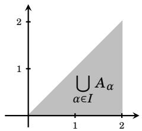

1.8 Indexed Sets¶
When a mathematical problem involves lots of sets, it is often convenient to keep track of them by using subscripts (also called indices). Thus instead of denoting three sets as \(A\), \(B\) and \(C\), we might instead write them as \(A_{1}\), \(A_{2}\) and \(A_{3}\). These are called indexed sets.
Although we defined union and intersection to be operations that combine two sets, you by now have no difficulty forming unions and intersections of three or more sets. (For instance, in the previous section we drew Venn diagrams for the intersection and union of three sets.) But let’s take a moment to write down careful definitions. Given sets \(A_{1}\), \(A_{2}\), \(\ldots\), \(A_{n}\), the set \(A_{1} \cup A_{2} \cup A_{3} \cup \cdots \cup A_{n}\) consists of everything that is in at least one of the sets \(A_{i}\). Likewise \(A_{1} \cap A_{2} \cap A_{3} \cap \cdots \cap A_{n}\) consists of everything that is common to all of the sets \(A_{i}\). Here is a careful definition.
Definition 1.7: Suppose \(A_{1}\), \(A_{2}\), \(\ldots\), \(A_{n}\) are sets. Then
But if the number \(n\) of sets is large, these expressions can get messy. To overcome this, we now develop some notation akin to sigma notation. You already know that sigma notation is a convenient symbolism for expressing sums of many numbers. Given numbers \(a_{1}, a_{2}, a_{3}, \ldots, a_{n}\), then
Even if the list of numbers is infinite, the sum
is often still meaningful. The notation we are about to introduce is very similar to this. Given sets \(A_{1}, A_{2}, A_{3}, \ldots, A_{n}\), we define
Example 1.12: Suppose \(A_{1} = \left\{ 0 , 2 , 5 \right\}\), \(A_{2} = \left\{ 1 , 2 , 5 \right\}\) and \(A_{3} = \left\{ 2 , 5 , 7 \right\}\). Then
This notation is also used when the list of sets \(A_{1}, A_{2}, A_{3}, A_{4}, \ldots\) is infinite:
Example 1.13: This example involves the following infinite list of sets: \(A_{1} = \{-1, 0, 1 \}, A_{2} = \{-2, 0, 2 \}, A_{3} = \{-3, 0, 3 \}, \dots , A_{i} = \{-i, 0, i \}, \dots\). Observe that \(\bigcup_{i = 1}^{\infty} A_{i} = \mathbb {Z}\) , and \(\bigcap_{i = 1}^{\infty} A_{i} = \{ 0 \}\).
Here is a useful twist on our new notation. We can write
which is understood to be the union of the sets \(A _ { i }\) for \(i = { 1 , 2 , 3 }\). Likewise:
Here we are taking the union or intersection of a collection of sets \(A_{i}\) where \(_i\) is an element of some set, be it \(\{ 1 , 2 , 3 \}\) or \(\mathbb{N}\). In general, the way this works is that we will have a collection of sets \(A_{i}\) for \(i \in I\), where \(I\) is the set of possible subscripts. The set \(I\) is called an index set.
It is important to realize that the set \(I\) need not even consist of integers. (We could subscript with letters or real numbers, etc.) Since we are programmed to think of \(i\) as an integer, let’s make a slight notational change: Use \(\alpha\), not \(_i\), to stand for an element of \(I\). Thus we are dealing with a collection of sets \(A_{\alpha}\) for \(\alpha \in I\). This leads to the following definition.
Definition 1.8: If \(A_{ \alpha }\) is a set for every \(\alpha\) in some index set \(I \neq \varnothing\), then
Example 1.14: In this example, all sets \(A_{\alpha}\) are all subsets of the plane \(\mathbb{R}^{2}\). Each \(\alpha\) belongs to the index set \(I = [ 0 , 2 ] = \left\{ x \in \mathbb{R} : 0 \leq x \leq 2 \right\}\), which is the set of all real numbers between 0 and 2. For each number \(\alpha \in I\), define \(A _ { \alpha }\) to be the set \(A _ { \alpha } = [ \alpha , 2 ] \times [ 0 , \alpha ]\), which is the rectangle on the \(xy\)-plane whose base runs from \(\alpha\) to 2 on the \(x\)-axis, and whose height is \(\alpha\). Some of these are shown shaded below. (The dotted diagonal line \(y = x\) is not a part of any of the sets, but is shown for clarity, as the upper left corner of each \(A_{\alpha}\) touches it.) Note that these sets are not indexed with just integers. For example, as \(\sqrt{2} \in I\), there is a set \(A_{\sqrt{2}}\), which shown below on the right.

Note that \(A_{0} = [ 0 , 2 ] \times [ 0 , 0 ] = [ 0 , 2 ] \times \left\{ 0 \right\} = \left\{ (0,0), \ldots, (1,0) \ldots, (2,0) \right\}\) is the interval \([0, 2]\) on the \(x\)-axis (a “flat” rectangle). Also, \(A_{2} = [ 2 , 2 ] \times [ 0 , 2 ] = \{ 2 \} \times [ 0 , 2 ] = \left\{ (2,0), \ldots, (2,1), \ldots, (2,2) \right\}\) is the vertical side of the dotted triangle in the above pictures.
Now consider the infinite union \(\displaystyle \bigcup _ { \alpha \in I } A _ { \alpha }\). It is the shaded triangle shown below, because any point \(( x , y )\) on this triangle belongs to the set \(A_{x}\), and is therefore in the union. (And any point not on the triangle is not in any \(A_{x}\).)

Now let’s work out the intersection \(\displaystyle \bigcap_{\alpha \in I} A_{\alpha}\). Notice that the point \((2, 0)\) on the \(x\)-axis is the lower right corner of any set \(A_{\alpha}\), so \(( 2 , 0 ) \in A_{\alpha}\) for any \(\alpha \in I\). Therefore the point \((2,0)\) is in the intersection of all the \(A_{\alpha}\). But any other point \(( x , y ) \neq ( 2 , 0 )\) on the triangle does not belong to all of the sets \(A_{\alpha}\). The reason is that if \(x < 2\) , then \(( x , y ) \notin A_{\alpha}\) for any \(x < \alpha \leq 2\). (Check this.) And if \(x = 2\), then \(( x , y ) \notin A_{\alpha}\) for any \(0 < \alpha < y\) (only \(y=0\) is valid). Consequently
This intersection consists of only one element, the point \((2,0)\). This example is tricky not because of computation, but because of how infinite unions/intersections work when the index set is continuous and because the sets change shape with \(\alpha\). The non-obvious insight is that for the intersection, a point must satisfy the conditions for every \(\alpha\) simultaneously, not just for one \(\alpha\), and \(\alpha\) ranges over all real numbers in \([0,2]\). \(A_{\alpha} = [\alpha,2] \times [0, \alpha]\) for each \(\alpha \in [0,2] = \{(x,y) \in \mathbb{R}^{2} : \alpha \leq x \leq 2 \text{ and } 0 \leq y \leq \alpha \}\). So each set \(A_{\alpha}\) is a rectangle whose left side is \(x=\alpha\), right side is \(x=2\), top is \(y=\alpha\) and bottom is \(y=0\). A point is in the union if it is in at least one \(A_{\alpha}\). When is a point in any \(A_{\alpha}\)? We need some \(\alpha\) such that \(\alpha \leq x \leq 2\) and \(0 \leq y \leq \alpha\). This means that \(y \leq \alpha \leq x\), so we need an \(\alpha\) that is between \(x\) and \(y\). That is exactly possible when \(0 \leq y \leq x \leq 2\), which is the triangle above. A point is in the intersection if it is in every \(A_{\alpha}\). This means that the conditions \(\alpha \leq x \leq 2\) and \(0 \leq y \leq \alpha\) must hold for all \(\alpha\) at once. These conditions must hold for every \(\alpha\) in the whole interval \([0,2]\), so in particular it must hold for the extreme values of the interval. The first condition is that \(\alpha \leq x \leq 2\) needs to hold for all \(\alpha\). Per the condition \(x \leq 2\), and because the largest \(\alpha\) can be 2 we also have \(2 \leq x\). We choose this extreme value, because if \(\alpha\) is big, the inequality \(\alpha \leq x\) is harder to satisfy; \(\alpha = 2\) gives the strongest constraint. This means \(2 \leq x \leq 2\), which means that \(x = 2\). In an intersection, the strongest constraint wins. Since \(\alpha\) can be as big as 2, \(x\) must be \(\geq 2\), but also \(\leq 2\). The second condition is that \(0 \leq y \leq \alpha\) needs to hold for all \(\alpha\). Per the condition \(0 \leq y\), and because the smallest \(\alpha\) can be 0 we also have \(y \leq 0\). We choose this extreme value, because if \(\alpha\) is small, the inequality \(y \leq \alpha\) is harder to satisfy; \(\alpha = 0\) gives the strongest constraint. This means \(0 \leq y \leq 0\), which means that \(y = 0\). Only one point survives these conditions and is thus in the infinite intersection: \((x,y) = (2,0)\). Picture intuition helps for union, but for intersection you must write: \(\forall \alpha \in [0,2]\) and solve the inequalities. Continuous index sets make intersections very strict.
Example 1.15: Here our sets are indexed by \(\mathbb{R}^{2}\): \((a,b) \in I = \{(a,b) \in \mathbb{R}^{2}\}\). For any \(( a , b ) \in \mathbb{R}^{2}\), let \(P_{(a,b)}\) be the following subset of \(\mathbb{R}^{3}\):
In words, given a point \((a,b) \in \mathbb{R}^{2}\), the corresponding set \(P_{(a,b)}\) consists of all points \((x,y,z)\) in \(\mathbb{R}^{3}\) that satisfy the equation \(ax + by = 0\) (or \(y = \dfrac{a}{-b}x\)). From previous math courses you will recognize this as a plane in \(\mathbb{R}^{3}\), that is, \(P_{(a,b)}\) is a plane in \(\mathbb{R}^{3}\). In \(\mathbb{R}^{3}\), a plane can be described by the equation \(ax + by + cz = d\). \(ax + by + 0z = 0\) is a special case of this equation, with \(z\) unrestricted: for every point \((x,y)\) on the line \(ax + by = 0\) in the \(xy\)-plane, you can choose any \(z\)-value. Moreover, since any point \((0,0,z)\) on the \(z\)-axis automatically satisfies the set condition \(ax + by = 0\) (no matter what the \(a\) or \(b\) values are), each \(P_{(a,b)}\) contains the \(z\)-axis.
Figure 1.11 (left) shows the specific set \(P_{(1,2)} = \left\{(x,y,z) \in \mathbb{R}^{3} : x + 2y = 0 \right\}\). It is the vertical plane that intersects the \(xy\)-plane at the line \(x + 2y = 0\) (or \(y = \dfrac{1}{-2}x\)).
 Figure 1.11. The sets $P_{(a,b)}$ are vertical planes containing the $z$-axis.
Figure 1.11. The sets $P_{(a,b)}$ are vertical planes containing the $z$-axis.
For any point \((a,b) \in \mathbb{R}^{2}\) with \((a,b) \neq (0,0)\), we can visualize \(P_{(a,b)}\) as the vertical plane that cuts the \(xy\)-plane at the line \(ax + by = 0\). Figure 1.11 (right) shows a few of the \(P_{(a,b)}\) sets. Since any two such planes intersect along the \(z\)-axis, and because the \(z\)-axis is a subset of every \(P_{(a,b)}\), it is immediately clear that
For the union, note that any given point \((a,b,c) \in \mathbb{R}^{3}\) belongs to the set \(P_{(-b,a)}\) because \((x,y,z) = (a,b,c)\) satisfies the equation \(-bx + ay = 0\), as plugging in \(x = a\) and \(y=b\) gives \(-ba +ab = 0\). The choice \((-b,a)\) is perpendicular to \((a,b)\) in the \(xy\)-plane. (In fact, any \((a,b,c)\) belongs to the special set \(P_{(0,0)} = \mathbb{R}^{3}\), which is the only \(P_{(a,b)}\) that is not a plane.) \(P_{(0,0)} = \{(x,y,z) \in \mathbb{R}^{3} : 0=0\} = \mathbb{R}^{3}\), \(0=0\) is always true no matter what \((x,y,z)\) are. Since any point in \(\mathbb{R}^{3}\) belongs to some \(P_{(a,b)}\) we have
Exercises for Section 1.8¶
Suppose \(A_{1} = \left\{a,b,d,e,g,f\right\}\), \(A_{2} = \left\{a,b,c,d\right\}\), \(A_{3} = \left\{b,d,a\right\}\) and \(A_{4} = \left\{a,b,h\right\}\). (a) \(\displaystyle \bigcup_{i=1}^{4} A_{i}\)
Answer
\(\displaystyle \bigcup_{i=1}^{4} A_{i} = \{a,b,c,d,e,f,g,h\}\)
(b) \(\displaystyle \bigcap_{i=1}^{4} A_{i}\)
Answer
\(\displaystyle \bigcap_{i=1}^{4} A_{i} = \{a,b\}\)
Suppose \(A_{1} = \left\{0,2,4,8,10,12,14,16,18,20,22,24\right\}\), \(A_{2} = \left\{0,3,6,9,12,15,18,21,24\right\}\) and \(A_{3} = \left\{0,4,8,12,16,20,24\right\}\). (a) \(\displaystyle \bigcup_{i=1}^{3} A_{i}\)
Answer
\(\displaystyle \bigcup_{i=1}^{3} A_{i} = \{0,2,3,4,6,8,9,10,12,14,15,16,18,20,21,22,24\}\)
(b) \(\displaystyle \bigcap_{i=1}^{3} A_{i}\)
Answer
\(\displaystyle \bigcap_{i=1}^{3} A_{i} = \{0,12,24\}\)
For each \(n \in \mathbb{N}\), let \(A_{n} = \left\{0,1,2,3,\ldots,n\right\}\). (a) \(\displaystyle \bigcup_{i \in \mathbb{N}} A_{i}\)
Answer
\(\displaystyle \bigcup_{i \in \mathbb{N}} A_{i} = \{0\} \cup \mathbb{N} = \mathbb{N}_{0}\)
(b) \(\displaystyle \bigcap_{i \in \mathbb{N}} A_{i}\)
Answer
\(\displaystyle \bigcap_{i \in \mathbb{N}} A_{i} = \{0,1\}\)
For each \(n \in \mathbb{N}\), let \(A_{n} = \left\{-2n,0,2n\right\}\). (a) \(\displaystyle \bigcup_{i \in \mathbb{N}} A_{i}\)
Answer
\(\displaystyle \bigcup_{i \in \mathbb{N}} A_{i} = \{k \in \mathbb{Z} : 2k\} = \{\ldots,-6,-4,-2,0,2,4,6,\ldots\}\)
(b) \(\displaystyle \bigcap_{i \in \mathbb{N}} A_{i}\)
Answer
\(\displaystyle \bigcap_{i \in \mathbb{N}} A_{i} = \{0\}\)
(a) \(\displaystyle \bigcup_{i \in \mathbb{N}} [i,i+1]\)
Answer
\(\displaystyle \bigcup_{i \in \mathbb{N}} [i,i+1] = [1,\infty) = \{x \in \mathbb{R} : x \geq 1\}\)
(b) \(\displaystyle \bigcap_{i \in \mathbb{N}} [i,i+1]\)
Answer
\(\displaystyle \bigcap_{i \in \mathbb{N}} [i,i+1] = \varnothing\)
(a) \(\displaystyle \bigcup_{i \in \mathbb{N}} [0,i+1]\)
Answer
\(\displaystyle \bigcup_{i \in \mathbb{N}} [0,i+1] = [0,\infty) = \{x \in \mathbb{R} : x \geq 0\}\)
(b) \(\displaystyle \bigcap_{i \in \mathbb{N}} [0,i+1]\)
Answer
\(\displaystyle \bigcap_{i \in \mathbb{N}} [0,i+1] = [0,2]\)
(a) \(\displaystyle \bigcup_{i \in \mathbb{N}} \mathbb{R} \times [i,i+1]\)
Answer
\(\displaystyle \bigcup_{i \in \mathbb{N}} \mathbb{R} \times [i,i+1] = \mathbb{R} \times [1,\infty) = \{(x,y) : x,y \in \mathbb{R}, y \geq 1\}\)
(b) \(\displaystyle \bigcap_{i \in \mathbb{N}} \mathbb{R} \times [i,i+1]\)
Answer
\(\displaystyle \bigcap_{i \in \mathbb{N}} \mathbb{R} \times [i,i+1] = \varnothing\)
(a) \(\displaystyle \bigcup_{\alpha \in \mathbb{R}} \{\alpha\} \times [0,1]\)
Answer
\(\displaystyle \bigcup_{\alpha \in \mathbb{R}} \{\alpha\} \times [0,1] = \mathbb{R} \times [0,1] = \{(x,y) : x,y \in \mathbb{R}, 0\leq y \leq 1\}\)
(b) \(\displaystyle \bigcap_{\alpha \in \mathbb{R}} \{\alpha\} \times [0,1]\)
Answer
\(\displaystyle \bigcap_{\alpha \in \mathbb{R}} \{\alpha\} \times [0,1] = \varnothing\)
(a) \(\displaystyle \bigcup_{X \in \mathscr{P}(\mathbb{N})} X\)
Answer
\(\mathscr{P}(\mathbb{N})\) is the power set of \(\mathbb{N}\): the set of all subsets of \(\mathbb{N} = \{\varnothing, \{1\}, \{2\}, \ldots, \{1,2\}, \{1,3\}, \ldots \}\). \(\displaystyle \bigcup_{X \in \mathscr{P}(\mathbb{N})} X = \mathbb{N}\)
(b) \(\displaystyle \bigcap_{X \in \mathscr{P}(\mathbb{N})} X\)
Answer
\(\mathscr{P}(\mathbb{N})\) is the power set of \(\mathbb{N}\): the set of all subsets of \(\mathbb{N} = \{\varnothing, \{1\}, \{2\}, \ldots, \{1,2\}, \{1,3\}, \ldots \}\). \(\displaystyle \bigcap_{X \in \mathscr{P}(\mathbb{N})} X = \varnothing\)
(a) \(\displaystyle \bigcup_{x \in [0,1]} [x,1] \times [0,x^{2}]\)
Answer
The union is the curved region whose upper boundary is \(y = x^2\). \(\displaystyle \bigcup_{x \in [0,1]} [x,1] \times [0,x^{2}] = \{(x,y) \in \mathbb{R}^{2} : 0 \leq x \leq 1, 0 \leq y \leq x^2\}\)
(b) \(\displaystyle \bigcap_{x \in [0,1]} [x,1] \times [0,x^{2}]\)
Answer
A point \((a,b)\) belongs to the intersection if and only if it belongs to every rectangle \([x,1] \times [0,x^2]\) for all \(x \in [0,1]\). \(x \leq a \leq 1\) for all \(x\) (only possible when \(a = 1\)) and \(0 \leq b \leq x^2\) for all \(x\) (only possible when \(b = 0\)). \(\displaystyle \bigcap_{x \in [0,1]} [x,1] \times [0,x^{2}] = \{(1,0)\}\)
Is \(\displaystyle \bigcap_{\alpha \in I} A_{\alpha} \subseteq \bigcup_{\alpha \in I} A_{\alpha}\) always true for any collection of sets \(A_{\alpha}\) with index set \(I\)?
Answer
Yes, this is always true, no matter what the index set \(I\) is. The intersection contains only points that are in every set. The union contains points that are in at least one set. So if something is in every set, it is certainly in at least one set. Intersection \(\subseteq\) union is as fundamental as “every square is a rectangle.”
If \(\displaystyle \bigcap_{\alpha \in I} A_{\alpha} = \bigcup_{\alpha \in I} A_{ \alpha}\), what do you think can be said about the relationships between the sets \(A_{\alpha}\)?
Answer
If the intersection exactly equals the union, then all \(A_{\alpha}\) are the exact same set. Every set in the family must be identical and overlap in exactly the same way for \(\displaystyle \bigcap_{\alpha \in I} A_{\alpha} = \bigcup_{\alpha \in I} A_{ \alpha}\) to hold.
If \(J \neq \varnothing\) and \(J \subseteq I\), does it follow that \(\displaystyle \bigcup_{\alpha \in J} A_{\alpha} \subseteq \bigcup_{\alpha \in I} A_{\alpha}\)? What about \(\displaystyle \bigcap_{\alpha \in J} A_{\alpha} \subseteq \bigcap_{\alpha \in I} A_{\alpha}\)?
Answer
\(\displaystyle \bigcup_{\alpha \in J} A_{\alpha} \subseteq \bigcup_{\alpha \in I} A_{\alpha}\) is always true: the union over \(I\) contains all elements that appear in any \(A_{\alpha}\) with \(\alpha \in I\) and since \(J \subseteq I\), every index in \(J\) is also in \(I\). The union is monotone: when the index set gets bigger, then the union gets bigger. \(\displaystyle \bigcap_{\alpha \in J} A_{\alpha} \subseteq \bigcap_{\alpha \in I} A_{\alpha}\) is false. The intersection gets smaller when you intersect more sets. Since \(I\) has at least the sets in \(J\) and possibly more, requiring membership in all \(A_{\alpha}\) for \(\alpha \in I\) is a stricter requirement. The correct inclusion direction is the opposite: \(\displaystyle \bigcap_{\alpha \in J} A_{\alpha} \supseteq \bigcap_{\alpha \in I} A_{\alpha}\)
If \(J \neq \varnothing\) and \(J \subseteq I\), does it follow that \(\displaystyle \bigcap_{\alpha \in I} A_{\alpha} \subseteq \bigcap_{\alpha \in J} A_{\alpha}\)? Explain.
Answer
\(\displaystyle \bigcap_{\alpha \in I} A_{\alpha} \subseteq \bigcap_{\alpha \in J} A_{\alpha}\) is true. The intersection gets smaller when you intersect more sets. Since \(I\) has at least the sets in \(J\) and possibly more, requiring membership in all \(A_{\alpha}\) for \(\alpha \in I\) is a stricter requirement. Let: \(I = \{1,2\}\) \(J = \{1\}\) \(A_{1} = \{1,2,3\}\) \(A_{2} = \{2,3\}\) Then: \(\displaystyle \bigcap_{J} A_{\alpha} = A_{1} = \{1,2,3\}\) \(\displaystyle \bigcap_{I} A_{\alpha} = A_{1} \cap A_{2} = \{2,3\}\) Indeed: \(\{2,3\} \subseteq \{1,2,3\}\)